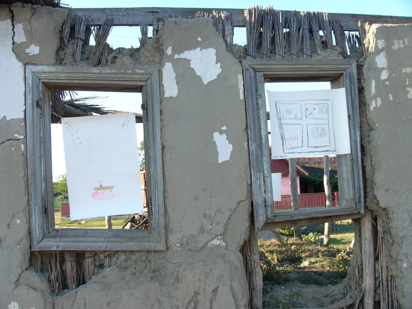

Reconstructie


Instalatie, 2011
Instalatie realizata in urma unui atelier de 3 zile cu copii de diverse varste apartinand Scolii gimnaziale SF. Gheorghe, Tulcea, pe tema casei si a locuirii. Institutiile exista: biblioteca este inchisa, scoala unde cei cativa invatatori sunt profesori de sport si de chimie; franceza, romana si pictura, consiliul local. Multi pleaca, ofertele sociale, culturale si de invatamant fiind aproape inexistente.
Atelierul a fost posibil in cadrul GrowArt Camp, tabara laborator de proiecte artistice, 2011.